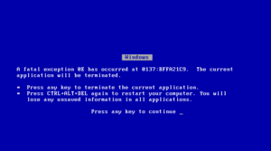

Hasefroch 95
 De: La Frikipedia, la enciclopedia extremadamente seria.
De: La Frikipedia, la enciclopedia extremadamente seria.
| De la serie Sistemas Operativos:
|
| Hasefroch 95
|
|
|
| Nombre
|
Hasefroch 95
|
| Desarrollador
|
Satán (obviamente) y El Capitán Fanegas
|
| Licencia
|
copyright de mocosoft®
|
| Núcleo
|
Similar al de un Huevo Kinder, pero sin premio
|
| Última versión
|
0.000001
|
| Estado actual
|
Divorciado
|
| Número de cuelgues/min.
|
Depende del grosor del esparto con el que esté fabricada la soga
|
| Puertas abiertas a los virus
|
Si dejas el PC al lado de la ventana, pilla el virus de la gripe, el de la varicela, el de...
|
| ¿Que tipo de usuarios pueden usarlo?
|
Cualquiera cuyo cociente intelectual sea mayor o igual que -20, lo cual excluye a estadounidenses y puertorriqueños, incluso diría que a cualquier líder político mundial
|
Suite de Hasecorp que engloba sus dos productos más mal acabados: MS-2 y Hasefroch. Esta versión de Hasefroch presenta las siguientes novedades:
- Cientos de
falsas excusas para reiniciar el ordenador.
- Estética tipo
medieval industrial.
- Sistema de bloqueo aleatorio.
- Seguridad nivel nulo para no desafiar a los juankers.
- Consumo de recursos ampliado para beneficio de ensambladores de PCs.
- Emulación de Mac OS con escritorio invertido.
- Sistema de archivos 'FAT' (
gordo Ficheros Asombrosamente Torpes) con altas tasas de colesterol fragmentación para mantener el disco duro bien gordo en forma.
- Sistema de gestión de memoria viva-la-virgen, que cada programa coja lo que quiera y que haga lo que le dé la gana.
- Solitario como tú
- El manual decía que era multiusuario (se necesitaban varias personas para conseguir que funcionase).
- Maravilloso sistema de mensajes (mediante Pantallazo Azul) para recordar que estábamos ejecutando un archivo en el CD-ROM que intentamos extraer.
- Al contrario que Hasefroch 98 no necesitaba ningún programa para ser apagado correctamente; se apretaba el botón de reset iyatá!!
Debido a su torpeza, su inestabilidad y su gran fiabilidad su comportamiento se convirtió en un sistema imprevisible, peligroso y un éxito de ventas, no como el aburrido y predecible Mac OS.
Frases célebres asociadas a H95
- "Abajo el sistema" (Mr. Pantalla Azul)
- "Esta
mierda no corre bien mis juegos arcade"
- "Ya quiero que salga el 96" (nunca salió).
- "¡Es el mejor sistema operativo de todos los tiempos!" (jamás se ha dicho ni se dirá)
 Obra de arte en Hasefroch 95.
- "Oiga ¿servico de atención al cliente de Hasecorp?, sí,sí, se ha incendiado otra vez"
- "Mira, he abierto la disquetera yo solito"
- "Un chiste malo señor Gates, ¿sabe cual es la afinidad entre Hasefroch 95 y una calculadora mojada?...pues que los dos se calan cada dos por tres...vale, vale, no me pegue con el ratón!"
- "y si cambio la pantalla por una pecera, ¿se verá mejor?
- "Oiga, ¿servicio técnico?, es que me he vuelto a pillar la corbata con la impresora"
- "Enfermera, este paciente se ha roto 10 huesos, ¿Qué le ha pasado?...ah, claro, se cayó del andamio mientras instalaba en su ordenador el Hasefroch 95, entiendo"
- "Oye, ¿desde cuándo tienes un dálmata?, desde que se me lo tragó la impresora"
¿Sabias que...
- ...Si quieres juankear un servidor la mejor forma de hacerlo es desde una pc con Windows 95?
- ...Fue un error decorarlo con ventanas ya que el apellido de Bill
Gays Gates es "puertas" y no "ventanas"
Enlaces relacionados
Autor(es):
- Krusher
- DonkeyG5
- Mu
- Emedeme
- Alexan
- Sunsinron
- ZiReX
- Barbadeus Motsand
- Aque
- NiKo-TiNa
Frikipedia 2005-2016, Licencia
GFDL 1.2 - Extraído por FrikiLeaks